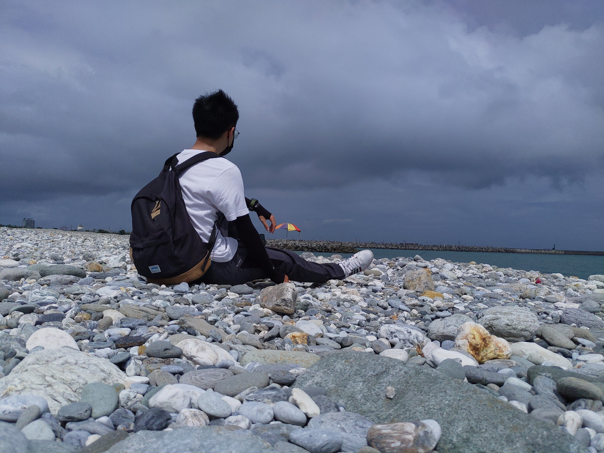

Last Updated Dec, 12, 2022.
I'm Tung-Yu, Hsieh. I am a student majoring in Computer Science, a gamer, an anime fan, a beginner of painting, photography, and game design. I was influenced by computer programs when I was young, and then my life has been filled with 0 and 1. There is a time when I was dreaming about making the best computer in the world, creating the most popular triple A game in the world, and designing the best graphics card of rendering. All of this made me walk all the way here. Perhaps it's not that perfect, but I still made it to get in to the academy of Computer Science.
However, I've finally realized that everything in this world has an enormous effort behind it. No matter hardware or software, everything in our daily life is full of high-end technology. Since then, I've discovered that my dream is still a thousand miles away, so I started the next part of my journey on pursuing my dream again. And I really do put a lot of effort to reach the goal. To pursue, challenge, and conquer them one by one. Hoping that one day, I'm able to see the shape of the dream again.
I was born without any talent of art. Thus, I've never thought about engaging in any kind of art. However, along the way I grew up, I've been fascinated by artworks. Whether exciting stories, vivid portraits, fabulous kinds of music or absolutely perfect photographs have impressed me a lot. And that's the reason why I've started to try creating artwork of my own. Enjoy the progress of creating artwork, though I am still bad at doing it.